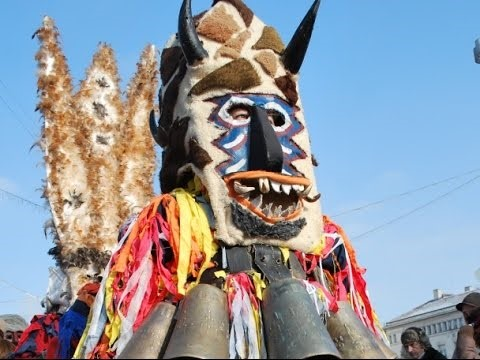
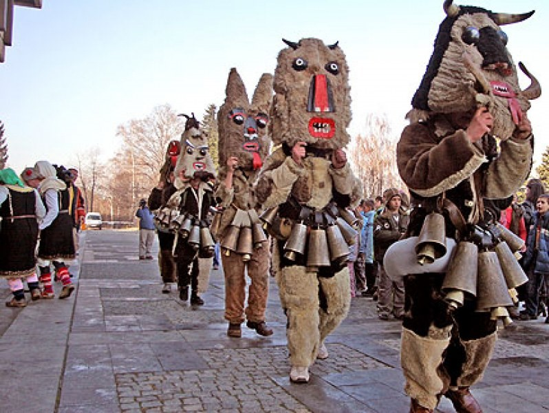
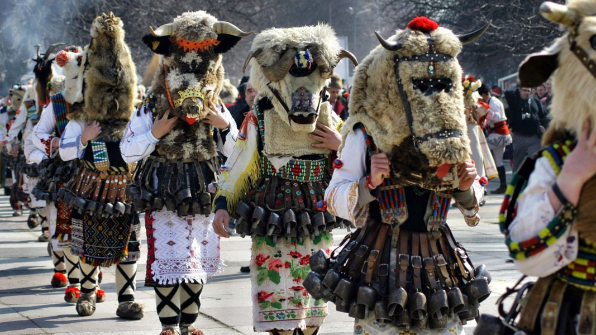

Железен му езика, желязна му устата. Започне ли да вика, събират се децата, заемат си местата, нареждат си нещата, учителят пристига под мишница със книга.
Стои изправен на снега, морковче му е носа, топка сняг са му краката, тенджерка върху главата.
Бяла, бяла лехица с черна, черна пшеница, жънеме я с очите, мелиме я с главите и с погача богата храниме си душата.
Като дойде дъжд – пораства изведнъж, . от тревата изнича, на чадърче прилича.
Юначага златокос, без очи, уши и нос, всичко лапа и поглъща — пръчка, книга, дреха, къща. Но дадеш ли му вода, пуща синкава брада и заплаква с тънък глас, и умира той завчас.
Всички обичат с нея да се кичат, но който не внимава с трън се запознава.
Кое е това, което обикаля света, стоейки само в един ъгъл?
Дран козел през село върви. Хем върви, хем реве. Що е то?
Кукерите идват по различно време: в Банско – по Нова година, в Перник – края на януари, а в други части на България – по Сирни заговезни (7 седмици преди Великден).
Кукерството е древен български ритуал за прогонване на зли духове и демонични сили. Изпълнителите - кукери танцуват, облечени в атрактивни костюми от конци, вълна и изрезки от различни платове и страшни маски.
Обичаят символизира изпращането на зимата и възвръщането на новия живот с настъпването на топлите дни и е един от най-древните по нашите земи, води началото си от преди 6000 години. Древните траки са наричали с думата кукери „високи и маскирани хора“.
Кукерските игри и обичаи се изпълняват само от мъже, главно ергени. Всяка кукерска дружина се състои от Момък ( Дядо ), Невеста ( Баба ), Цар или Стопанин и останалите кукери. Водач е Царят или, както го наричат в други краища, Стопанинът, който единствен е женен мъж. В източна България водачите са облечени в обичайните булчински и младоженски костюми. В останалите части на България са облечени с кози, овчи или сърнешки кожи с козината отвън, имат кожени маски на главите или са с начернени лица.
Всички хора се радват на кукерите, защото те прогонват злото и обещават богата реколта през следващата година. Групата мъже обхождат домовете с пожелания за здраве, плодородие и благополучие и събират подаръци от стопаните (брашно, боб, яйца и др.). Във всеки дом кукерите изпълняват различни битови и комични сцени. Накрая, на селския мегдан, играят буйни танци, като раздрънкват силно окачените по тях звънци. След това се извършва обредното заораване и засяване, където централна фигура е царят. Обикновено се избира най-личният стопанин, с първо мъжко дете или баща на близнаци, за да бъде плодородна годината. За „царя“ може да бъде сложена трапеза на селския мегдан, на която той хапва три хапки (залъка), отпива вино и нарича за здраве, берекет и плодовитост. След това подкарва впрегнатите в ралото кукери, изорава три бразди в кръг и ги засява.
Освен в България кукери има и в Румъния, Сърбия, Гърция, Македония, Молдова, Словения, Хърватска, дори в Италия и Франция, където маскирани хора са познати под други имена.
  